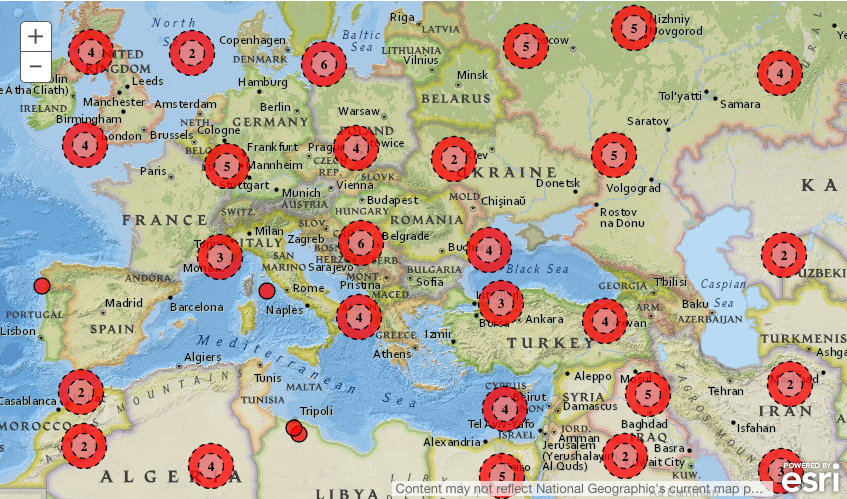

Overview
Key Features:
- Show multiple geospatial facets on one map
- Fast display of cluster markers
- Distinctly colored markers per facet
- Mouse interaction:
- Double-click to zoom in and limit geo search
- Drag to change center and limit geo search
- Click on single point markers to show details
Quickstart
To start using Esri Maps for MarkLogic, follow these steps to get started.
-
Download ml-esri-maps-ng (minified version) and put it with your other scripts. Alternatively, you can use Bower to install it automatically:
bower install [--save] ml-esri-maps-ng -
Load ml-esri-maps-ng.js into your HTML page (typically in the end of the BODY of your HTML):
<script src='/bower_components/ml-google-esri-ng/dist/ml-esri-maps-ng[.min].js'></script> -
Include the Esri Javascript API:
<script src='//js.arcgis.com/3.14/'></script> -
Load Esri stylesheet and the ml-esri-maps-ng.css into your HTML page (typically in the end of the HEAD of your HTML):
<link rel="stylesheet" href="//js.arcgis.com/3.14/esri/css/esri.css"> <link rel="stylesheet" href="/bower_components/ml-esri-maps-ng/dist/ml-esri-maps-ng.css"> -
Update your application module to depend on the
ml-esri-maps-ngmodule:angular.module('myApplicationModule', ['ml.esri-maps']);
Directives
ml-esri-search-map
Description:
The ml-esri-search-map directive utilizes geospatial facet data to draw cluster markers on the map. The geospatial facet data is expected to have a box coordinates along with the count for the number of items contained in the box. When the facets data has multiple geospatial facets, each facet gets a unique color for the cluster markers (up to 5 different colors).
Attributes:
-
options: The options used to initialize the map. Possible properties of the object are:center: The latitude and longitude for the center of the map (e.g - [52.00, 4.84]).zoom: The zoom level of the map.baseMap: The Esri base map to use (Esri base map options).
-
facets: The JSON object containing the facets to be used to create data on the map. -
bounds-changed: The callback function reference when the bounds of the map are changed.
Example:
To use the ml-esri-search-map directive, you must first follow the steps in the Quickstart section to prepare your application. Then follow the steps below:
-
Expose objects and call-back functions in your Angular controller:
MyCtrl.$inject = ['$scope']; function MyCtrl($scope) { var ctrl = this; var ctrl.mapOptions = { center: [4.8447237, 52.3881895], zoom: 10, baseMap: 'national-geographic' }; ctrl.myFacets = { facets: { locations: { count: 4262, boxes: [{ count: 625, s: 52.28889, w: 4.856865, n: 52.33222, e: 5.019565 }, { count: 1301, s: 52.33256, w: 4.763993, n: 52.40219, e: 4.844532 }, { count: 2336, s: 52.33251, w: 4.844792, n: 52.42354, e: 5.025896 }] } } }; ctrl.boundsChanged = function(bounds) { // place your geospatial search code here, and make that update $scope.myFacets // // The <bounds> parameter has an object structure like: // // { // 'south': 51.0, // 'west': 4.11, // 'north': 53.0, // 'east': 5.25 // } // }; } -
Add
ml-esri-search-mapelement in your template:<ml-esri-search-map options="ctrl.mapOptions" facets="ctrl.myFacets.facets" bounds-changed="ctrl.boundsChanged(bounds)"></ml-esri-search-map>
ml-esri-detail-map
Description:
The ml-esri-detail-map directive is used to display 1 or more points on a smaller version of an Esri map. This is typically used to give geospatial context to an individual document/object.
Attributes:
-
geometry: The geometry details of item to display on the map. This attribute can take an array with a single point or an array of arrays of points:[52.00, 4.84]: Example of a single point.[[52.00, 4.84], [52.54, 4.890]]: Example of multiple points.
-
base-map: The Esri base map to use (Esri base map options). -
zoom: The zoom level of the map.
Example:
To use the ml-esri-search-map directive, you must first follow the steps in the Quickstart section to prepare your application. Then follow the steps below:
-
Expose objects in your Angular controller:
MyCtrl.$inject = ['$scope']; function MyCtrl($scope) { var ctrl = this; var ctrl.mapData = { 'geometry': [52.3881895, 4.8447237], 'baseMap': 'streets', 'zoom': 4 } -
Add
ml-esri-detail-mapelement in your template:<ml-esri-detail-map geometry="ctrl.mapData.geometry" base-map="ctrl.mapData.baseMap" zoom='ctrl.mapData.zoom'></ml-esri-detail-map>